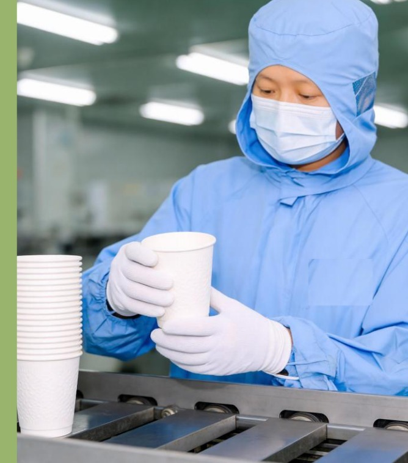

Qingyue Technology Co., Ltd. is a China-based exporter and supplier of sustainable, biodegradable foodservice packaging. We work closely with a 60,000 m² manufacturing base equipped with automated production lines, an in-house R&D team and a complete quality-control laboratory. We supply eco-friendly paper cups, bowls, food boxes, straws, plates and bags to customers in more than 150 countries and regions — from design and sampling to mass production, packaging and shipment.
We work with a 60,000 m² manufacturing base equipped with automated lines, dust-free workshops and a complete QC laboratory — from raw material inspection to UV-sterilised, oven-dried finished goods.

Manufacturing scale, capacity figures and certifications refer to our partner manufacturing base.
Our partner manufacturing base was established, specialising in eco food packaging.
Dongguan manufacturing base put into production, expanding capacity.
Passed major international chain-supplier audits; accelerated growth.
Continuous expansion of the green product line and export markets.
Trust is the life of a brand.
Committed to resource recycling and emission reduction.
Innovation as the engine of high-quality growth.
Building a platform for mutual success.
Quality, social responsibility, responsible forestry and food-safety certificates.